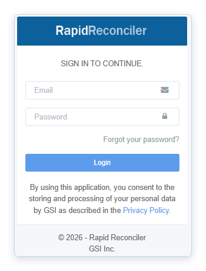
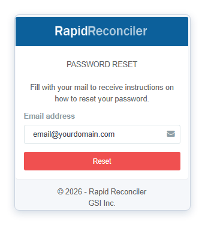

Application Basics
A short orientation for new RapidReconciler users — how to log in, find your way around the interface, and prepare your workstation. If something on this page already feels familiar, skip ahead using the sidebar.
Topics
| Topic | What it covers |
|---|---|
| Logging In to the Application | Where to go in your browser, how to enter your credentials, password resets, and the requirements that govern your password. |
| Navigating the Application | The page banner, the main navigation bar on the left, the module status bar at the top of each module, and the help panel. |
| Preparing to Use the Application | Workstation requirements and what to do if you log in but no data appears. |
- Application URL
- rapidreconciler.getgsi.com
- Forgot password
- Login screen → "Forgot Your Password?" link
- Password rotation
- Every 90 days; you'll be prompted automatically
- Supported browsers
- Chrome, Edge, Firefox, Safari (Mac compatible)
- Minimum RAM
- 8 GB
- Support email
- rrsupport@getgsi.com
Related guides
For a searchable directory of every status light, button, panel, and indicator — with what each one means and what to do about it — see UI Reference For password complexity rules and reset walkthrough, see Complex Passwords For Admin-only tasks like adding users and importing JDE data, see Administrator WalkthroughLogging In to the Application
Three things to know before your first login: which browser to use, where to find the application, and how to set your password.
Accessing RapidReconciler
RapidReconciler is accessible via Google Chrome, Microsoft Edge, or Safari.
Navigate to the RapidReconciler web page: rapidreconciler.getgsi.com.
Important: The credentials you have been provided will only work on one of the two links. Choose the appropriate link based on your user type.
Entering Your Credentials
When your Administrator adds you to the RapidReconciler system, you will receive a confirmation email. Your login ID will be the email address used for the confirmation.
To assign or reset your password:
- Click the "Forgot Your Password?" link on the login screen.
- Enter your email address on the Password Reset page.
- Click Reset to receive instructions for setting your password.


Password Requirements
- Passwords must be reset every 90 days. You will be prompted when your 90-day period has expired.
- GSI has the ability to enable complex passwords for RapidReconciler.
- Contact GSI at rrsupport@getgsi.com to enable this feature for your company.
Preparing to Use the Application
A short checklist of workstation requirements, plus what to do if you log in successfully but nothing appears on screen.
Computer Checklist
Before beginning, verify that your workstation meets the following minimum requirements:
- A current web browser — Google Chrome, Microsoft Edge, Firefox, or Safari (compatible with Mac as well).
- A minimum of 8 GB of RAM.
Troubleshooting: No Data Displayed After Login
If you are able to log in but no data is displayed, work through these checks in order — from quickest to most involved:
- Network Connection — You must be connected to your office network. If working remotely, connect via VPN or another approved method before accessing the application.
- Reload the Browser — Use
Shift+F5to perform a hard reload of the browser. - Browser Local Network Access — Recent browser updates have introduced a permission that controls whether a site can connect to devices on your local network. RapidReconciler must be allowed. See how to verify this in Microsoft Edge below; Chrome has an equivalent setting.
- Firewall or IP Filter Changes — If your IT team has recently updated the corporate firewall or rolled out IP filtering software, RapidReconciler traffic may now be blocked. Ask IT to confirm that
rapidreconciler.getgsi.comis permitted through any firewall rules or filter lists that apply to your workstation. - Clear Browser Data — This procedure varies by browser. Contact your IT department for specific instructions.
Verifying Local Network Access (Microsoft Edge)
To check or update the setting in Microsoft Edge:
- Open Edge Settings.
- Go to Privacy, search, and services → Site permissions → All permissions → Local network access.
- Under Customized behaviors, look at the Allowed to connect to any device on your local network list.
rapidreconciler.getgsi.comshould appear there. - If it is missing, click Add site next to that list and add
rapidreconciler.getgsi.com.

Chrome offers an equivalent setting under its site-permissions area; the wording differs slightly but the idea is the same. If you cannot find or change this setting on your machine, your IT department should be able to assist.
If none of the above resolves the issue, email RapidReconciler Support at rrsupport@getgsi.com.